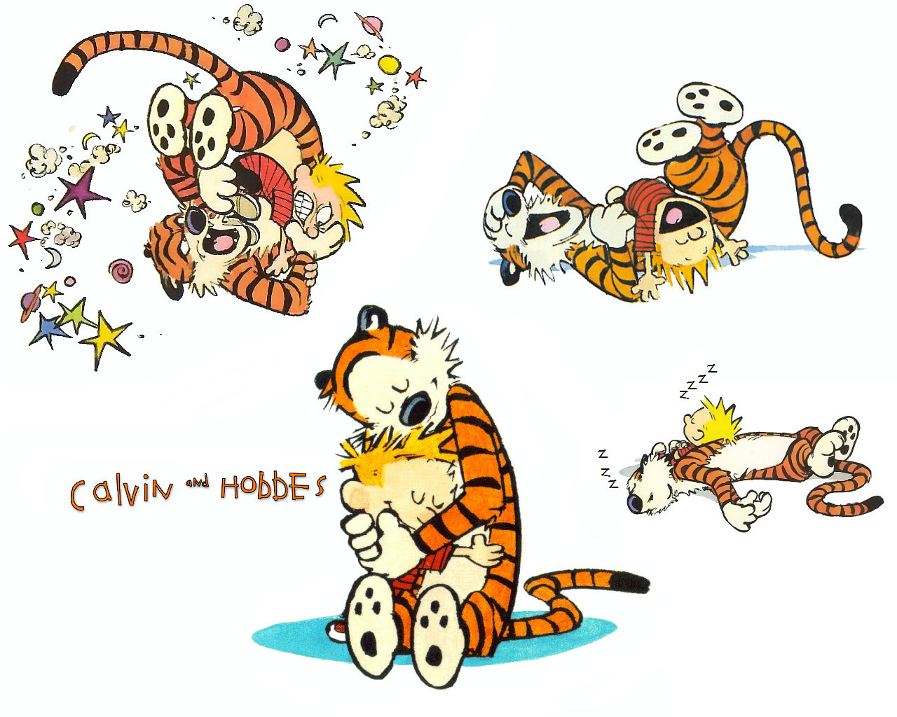
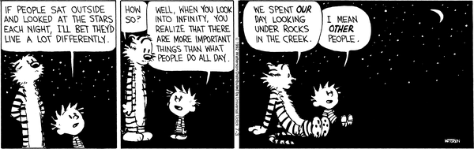
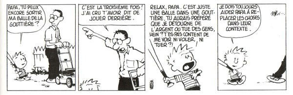
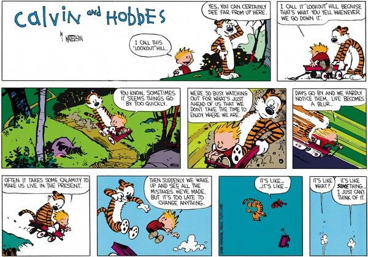
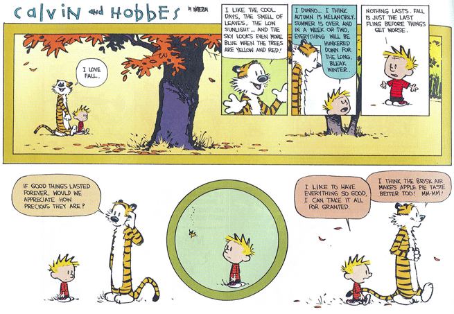
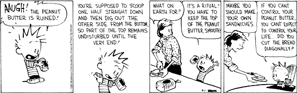
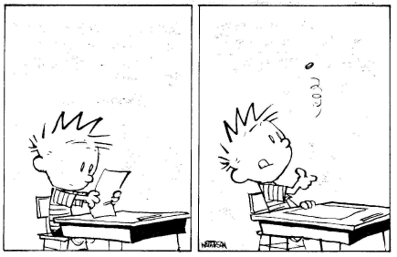
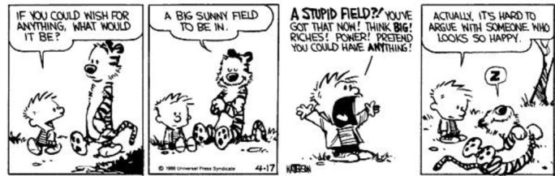
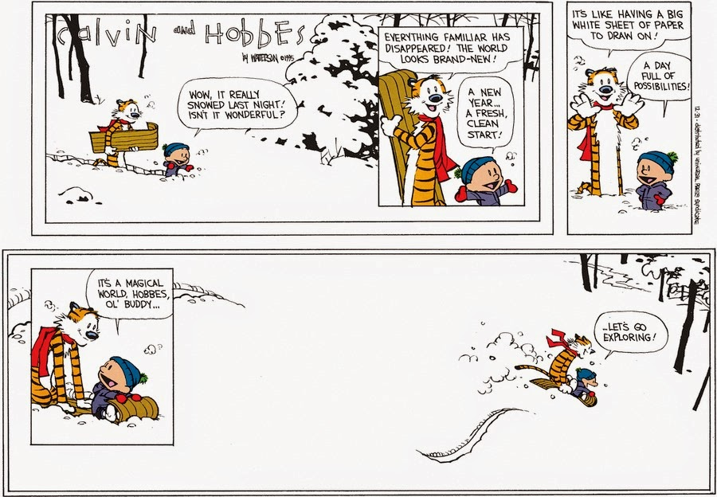

Prologue - "Le monde est magique, allons l'explorer !"
A quelques semaines de notre départ, il nous semblait important de partager avec vous notre état d'esprit au moment d'aborder un voyage de sept mois en duo à travers les continents américains. Pour vous épargner un nouveau discours sur les malheurs de la société occidentale ou sur l'importance d'aller à la rencontre de cultures différentes, nous avons préféré donner la parole à deux de nos héros. Il s'agit de Calvin l'enfant de six ans le plus insupportable et le plus génial qui soit, et de son tigre en peluche Hobbes capable de la plus fine des philosophies. Tous deux sont issus de l'imagination du célèbre cartoonist américain Bill Watterson. Traduisez Watterson et vous obtiendrez "fils de l'eau"...
En tout cas Calvin & Hobbes sont de véritables sources d'inspiration pour nous deux. Voici 10 strips qui résument les 10 commandements de notre voyage :
1. Passer du temps avec ses amis

Calvin & Hobbes c'est avant tout une histoire d'amitié entre deux personnages inséparables. Il arrive régulièrement que les deux soient en désaccord, ou se battent. Parfois ils ont même du mal à admettre qu'ils tiennent l'un à l'autre, mais finalement ils profitent du temps qu'ils ont pour passer un maximum de temps ensemble car comme le dit Calvin : " Les bons vrais amis sont durs à trouver, difficiles à perdre et impossibles à oublier. "
2. Prendre le temps

Pris dans le tourbillon de nos études, de nos stages, de notre travail, nous vivons en constante hyperactivité si bien que nous finissons par oublier de regarder autour de nous. Du haut de ses six ans Calvin nous invite à réfléchir : et si le bonheur se trouvait simplement dans la nature qui nous entoure...
3. Apprendre à relativiser

Au cours de notre périple nous rencontrerons sûrement de multiples problèmes. Se mettre en colère ne sert à rien, souvent il vaut mieux relativiser et aborder le problème sous différents angles afin d'en trouver la solution.
4. S'amuser tant qu'on peut

"J"ai l'impression qu'une fois que les gens deviennent des grandes personnes, ils ne savent plus ce qui est cool" nous dit Calvin. Alors partons vite avant de devenir des grandes personnes incapables de nous amuser ;)
5. Profiter de l'instant présent

" On est tellement préoccupé par ce qui est devant nous qu'on ne prend plus le temps d'apprécier le moment présent." Nos 7 mois de voyages ne serviront pas à améliorer notre CV, ni à préparer notre future vie professionnelle, mais nous faisons la promesse d'essayer de profiter de chaque instant.
6. Appréhender le changement

Calvin n'aime pas l'automne, il a l'impression que c'est le dernier bon moment de l'année avant le début des durs mois d'hiver. Heureusement Hobbes est là pour nous rappeler que c'est parce qu'ils ne durent pas éternellement que l'été et l'automne sont agréables et c'est par opposition à l'hiver que nous apprécions les chaleurs estivales. Notre voyage durera 7 mois, ce sera pour nous l'occasion d'en apprendre beaucoup sur nous-mêmes et sur le monde. Mais nous sommes parfaitement conscients qu'un retour à la vie "normale" est prévue après ces 7 mois et c'est parfait ainsi car les changements de rythme font partie de la vie.
7. Prendre sa vie en main

Si vous n’arrivez pas à contrôler votre beurre de cacahuète, n’espérez pas contrôler votre vie !
8. Se laisser porter

Parfois il faut se laisser porter par le courant et voir ce que la vie nous réserve...
9. Rester heureux

Et oui, pourquoi en demander toujours plus si le plus simple nous convient ?
10. Aller explorer le monde

C'est par cette planche que Watterson conclut la saga Calvin & Hobbes en 1995, et elle illustre parfaitement notre état d'esprit avant de partir : "Le monde est magique Hobbes, viel ami, partons l'explorer !"